Το πολιτικό προφίλ των Ελλήνων εστιασμένο στ’ αριστερά
Κώστας Κούδας
2025-08-03
Στην παρούσα εργασία θα εξετάσουμε το πολιτικό προφίλ των Ελλήνων, επικεντρωνόμενοι στα ζητήματα που απασχολούν την αριστερά. Προς τούτο αντλήσαμε δεδομένα από το Ινστιτούτο Εναλλακτικών Ιδεών και Πολιτικών - Ένα.
1 Πολιτικές ταυτότητες
1.1 Ο χαρακτήρας του κάθε κόμματος
Τα πρώτα δεδομένα που θα χρησιμοποιήσουμε είναι τα παρακάτω:
| politiki_taytotita | synolo | ilikia17_34 | ilikia35_54 | ilikia55ano | ND | SYRIZA | PASOK | KKE | Spartiates | Elliniki_Lysi | Niki | Pleysi_Eleytherias | Nea_Aristera | MERA25 | Aristera_Kentroaristera |
|---|---|---|---|---|---|---|---|---|---|---|---|---|---|---|---|
| Πατριώτης | 23 | 28 | 27 | 17 | 20 | 9 | 13 | 12 | 54 | 52 | 71 | 29 | 4 | 12 | 10 |
| Κεντρώος | 20 | 19 | 19 | 22 | 29 | 14 | 39 | 10 | 8 | 8 | 12 | 19 | 4 | 5 | 6 |
| Προοδευτικός | 20 | 30 | 22 | 15 | 19 | 34 | 25 | 18 | 8 | 9 | 8 | 35 | 27 | 29 | 30 |
| Κεντροδεξιός | 18 | 16 | 17 | 19 | 43 | 3 | 7 | 2 | 8 | 19 | 17 | 3 | 2 | 2 | 0 |
| Κεντροαριστερός | 17 | 19 | 14 | 19 | 4 | 49 | 43 | 11 | 0 | 3 | 3 | 23 | 37 | 24 | 48 |
| Φιλελεύθερος | 15 | 26 | 15 | 10 | 28 | 4 | 11 | 8 | 12 | 9 | 7 | 10 | 4 | 7 | 5 |
| Οικολόγος | 11 | 15 | 10 | 10 | 9 | 11 | 14 | 9 | 19 | 1 | 5 | 19 | 27 | 22 | 16 |
| Αριστερός | 10 | 15 | 8 | 10 | 0 | 29 | 4 | 32 | 0 | 1 | 0 | 10 | 57 | 37 | 31 |
| Φεμινιστής | 8 | 16 | 8 | 6 | 6 | 11 | 9 | 9 | 0 | 0 | 5 | 26 | 24 | 29 | 16 |
| Σοσιαλδημοκράτης | 8 | 11 | 9 | 6 | 4 | 7 | 30 | 3 | 4 | 0 | 3 | 13 | 16 | 12 | 15 |
| Υπέρμαχος_ελεύθερης_αγοράς | 8 | 14 | 9 | 5 | 15 | 2 | 6 | 0 | 8 | 7 | 7 | 0 | 0 | 0 | 2 |
| Δεξιός | 8 | 12 | 9 | 5 | 11 | 1 | 1 | 0 | 19 | 15 | 27 | 6 | 0 | 2 | 0 |
| Συντηρητικός | 7 | 16 | 7 | 3 | 6 | 1 | 2 | 4 | 0 | 18 | 29 | 3 | 2 | 0 | 0 |
| Σοσιαλιστής | 6 | 10 | 4 | 5 | 1 | 11 | 14 | 12 | 0 | 1 | 2 | 3 | 22 | 15 | 15 |
| Εθνικιστής | 5 | 9 | 7 | 3 | 0 | 1 | 0 | 1 | 46 | 18 | 15 | 6 | 0 | 0 | 0 |
| Αντικαπιταλιστής | 4 | 9 | 3 | 3 | 0 | 6 | 1 | 16 | 4 | 0 | 7 | 6 | 14 | 22 | 11 |
| Κομμουνιστής | 4 | 4 | 4 | 4 | 0 | 2 | 0 | 40 | 0 | 0 | 0 | 3 | 0 | 12 | 11 |
| Αναρχικός | 2 | 3 | 2 | 1 | 0 | 2 | 1 | 5 | 0 | 0 | 0 | 3 | 6 | 5 | 5 |
| Ακροδεξιός | 1 | 2 | 2 | 0 | 0 | 0 | 0 | 0 | 15 | 3 | 2 | 0 | 0 | 0 | 0 |
| Ακροαριστερός | 1 | 2 | 1 | 1 | 0 | 1 | 0 | 4 | 0 | 0 | 0 | 0 | 6 | 10 | 3 |
| Λαϊκιστής | 1 | 2 | 1 | 0 | 0 | 1 | 1 | 2 | 8 | 2 | 0 | 0 | 0 | 0 | 1 |
| ΔΞ/ΔΑ | 6 | 5 | 8 | 4 | 3 | 3 | 2 | 5 | 0 | 4 | 3 | 16 | 2 | 7 | 1 |
Βλέπουμε ότι κάθε γραμμή αντιστοιχεί σε μια πολιτική ταυτότητα. Θα μπορούσαμε να πούμε πως ο πολιτικός χαρακτήρας ενός κόμματος, των ψηφοφόρων του για την ακρίβεια, είναι αυτά τα 22, που αφορούν τις πολιτικές ταυτότητες:
## [1] "Πατριώτης" "Κεντρώος" "Προοδευτικός"
## [4] "Κεντροδεξιός" "Κεντροαριστερός" "Φιλελεύθερος"
## [7] "Οικολόγος" "Αριστερός" "Φεμινιστής"
## [10] "Σοσιαλδημοκράτης" "Υπέρμαχος_ελεύθερης_αγοράς" "Δεξιός"
## [13] "Συντηρητικός" "Σοσιαλιστής" "Εθνικιστής"
## [16] "Αντικαπιταλιστής" "Κομμουνιστής" "Αναρχικός"
## [19] "Ακροδεξιός" "Ακροαριστερός" "Λαϊκιστής"
## [22] "ΔΞ/ΔΑ"Για να κάνουμε ευκρινέστερες τις ομοιότητες και τις διαφορές των διαφόρων κομμάτων, θα παρουσιάσουμε τα αστρογράμματά τους.
Βλέπουμε παρόμοιους σχηματισμούς σε ΝΔ, ΠΑΣΟΚ και ΣΥΡΙΖΑ. Κάτι που ίσως να σημαίνει ότι δεν διαφέρουν και τόσο πολύ οι ψηφοφόροι τους. Ομοίως οι Σπαρτιάτες, η Ελληνική Λύση και η Νίκη έχουν παρόμοια μορφολογία ψηφοφόρων. Τέλος, παρόμοιες αναλογίες στις πολιτικές τους ταυτότητες έχουν και οι ψηφοφόροι του ΜΕΡΑ25 και της Νέας Αριστεράς.
Ας πάμε να ελέγξουμε και γραφικά τη εγγύτητα των διαφόρων κομμάτων με ένα δεντρόγραμμα και μια μήτρα απόστασης. Να σημειώσουμε εδώ ότι όσο πιο ψυχρό είναι ένα κελί του κάτωθι πίνακα, τόσο μεγαλύτερη εγγύτητα έχουμε στα κόμματα που διασταυρώνονται εκεί.
Από τα κλαδιά του δεντροδιαγράμματος βλέπουμε να σχηματίζονται τρεις ομάδες:
- Μία απαρτιζόμενη από ΝΔ, Σπαρτιάτες, Ελληνική Λύση και Νίκη,
- άλλη μία από Πλεύση Ελευθερίας, ΣΥΡΙΖΑ και ΠΑΣΟΚ και
- μία από ΚΚΕ, Νέα Αριστερά και ΜΕΡΑ25.
Είπαμε πως κάθε ένα από τα 10 κόμματα αναπαρίσταται από μια 22-άδα τιμών που αφορούν τις πολιτικές ταυτότητες. Πόσο πιστά μπορούν αυτές να απεικονιστούν σε λιγότερες από 10 διαστάσεις; Προς τούτο θα χρησιμοποιήσουμε τη διατακτική πολυδιάστατη προσαρμογή κλίμακας (MDS). Θέλοντας να ρίξουμε την ένταση του Kruskal κάτω από 0.05, ώστε να έχουμε εξαιρετικό τρόπο αναπαράστασης, καταλήγουμε να χρειάζονται τρεις διαστάσεις για την αναπαράσταση των αποστάσεων των κομμάτων.
## [1] "Η διάσταση είναι 3 και η ένταση είναι 0.0165520574442453 ."
Μάλιστα το γράφημα αποστάσεων δείχνει μια έντονη γραμμική συσχέτιση, μεταξύ των παρατηρούμενων αποστάσεων και αυτών που θα ήταν αν βρισκόμασταν στις τρεις διαστάσεις, οπότε σίγουρα η τρισδιάστατη αναπαράσταση είναι μια εξαιρετική επιλογή. Ας δούμε, όμως, και το γράφημα των τριών διαστάσεων.
Ο οριζόντιος άξονας που διαβαθμίζει το αριστερά-δεξιά θα μπορούσαμε να πούμε ότι είναι ακριβώς αυτός που ορίζει ο πολιτικός άξονας αριστερά-δεξιά. Ευχάριστη σύμπτωση! Στα δεξιά η δεξιά και στ’ αριστερά η αριστερά. Ο άξονας μπρος-πίσω ίσως να ξεχωρίζει τα συστημικά από τα αντισυστημικά κόμματα. Ο κατακόρυφος άξονας, ο πάνω-κάτω φαίνεται λίγο παράδοξος. Ομαδοποιεί Νίκη με Πλεύση Ελευθερίας και ξεχωριστά Σπαρτιάτες με ΠΑΣΟΚ και Νέα Αριστερά. Ο γράφων δεν μπορεί να φανταστεί προς το παρόν κάτι που να αιτιολογεί αυτή τη διάκριση.
Αν, όμως, κάποιος θέλει οπωσδήποτε να περιοριστεί στις δύο διαστάσεις, τότε δεν είναι τόσο άσχημα τα πράγματα. Η ένταση του Kruskal βγαίνει λίγο μεγαλύτερη του 0.05, αλλά όχι κάτι που δεν θα αποτελούσε καλή επιλογή. Επομένως, δεν θα προέκυπτε κίνδυνος εξαγωγής εσφαλμένων συμπερασμάτων, αν υιοθετούσαμε τις δύο διαστάσεις.
## [1] "Η διάσταση είναι 2 και η ένταση είναι 0.0620255504130485 ."Ας δούμε και τον χάρτη των αποστάσεων στις δύο διαστάσεις.
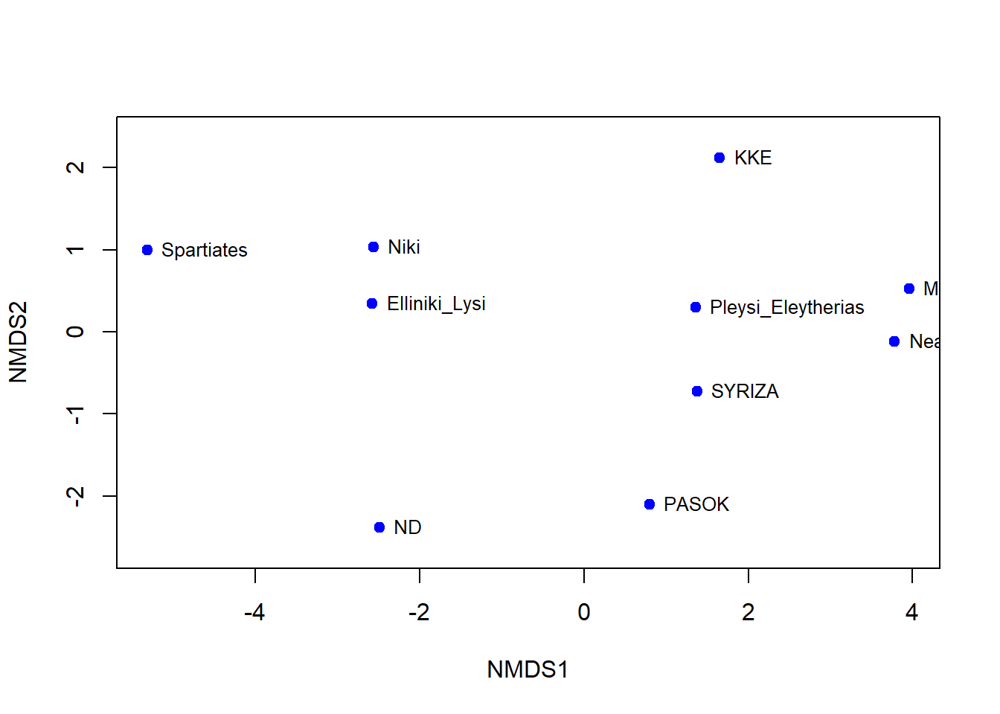
Θα μπορούσαμε να πούμε και πάλι πως ο οριζόντιος άξονας είναι ο άξονας αριστερά-δεξιά: αριστερά είναι η αριστερά και δεξιά η δεξιά. Ο κατακόρυφος ίσως κι αυτή τη φορά να είναι ο άξονας του μέτρου της αντισυστημικότητας: πάνω τα κόμματα που είναι αντισυστημικά και κάτω αυτά που είναι συστημικά.
1.2 Το πολιτικό τοπίο των ελληνικών απόψεων
Κάποια ζητήματα που θα εξετάσουμε εδώ είναι τα εξής:
Εβρισκόμενοι σε ένα κόμμα, κάποια πολιτική ταυτότητα τίνει να διογκωθεί εμφανώς πάνω από το μέσο όρο ή να συμπιεστεί εμφανώς κάτω από το μέσο όρο;
Έχοντας ένα άτομο με την τάδε πολιτική ταυτότητα, το γεγονός αυτό εκτοξεύει ή καταβαραθρώνει τις πιθανότητες να είναι του ενός ή του άλλου κόμματος;
Η διαδικασία που θα εκπληρώσει αυτό το στόχο είναι η ανάλυση αντιστοιχίας (CORA), αλλά δυστυχώς απαιτεί, όχι τα ποσοστά των πολιτικών ταυτοτήτων σε κάθε κόμμα (τα οποία μάς δίνονται), αλλά στο σύνολο όλων των απαντήσεων. Αυτό θα μάς εξαναγκάσει να εκμαιεύσουμε τα εν λόγω ποσοστά και ίσως να προσθέσει μια μικρή ανακρίβεια στα αποτελέσματα.
Αλλά ας δώσουμε λίγη περισσότερη προσοχή στα προηγούμενα! Αυτό που θα ψάξουμε δεν είναι τα ποσοστά των ανθρώπων που έδωσαν τη μία ή την άλλη απάντηση, αλλά τα ποσοστά της κάθε απάντησης στο σύνολο των απαντήσεων που δόθηκαν συνολικά. Δεδομένου ότι κάθε ένας μπορεί να αυτοχαρακτηριστεί με περισσότερες από μία πολιτικές ταυτότητες, κάλλιστα μπορεί όλοι (100% των ερωτηθέντων) να δηλώνουν π.χ. «καλοί άνθρωποι», αλλά η ταυτότητα «καλός άνθρωπος» να εμφανίζεται στο 50% των συνολικών απαντήσεων, καθόσον υπάρχουν κι άλλες απαντήσεις. Για να το κάνουμε σαφέστερο, φανταστείτε να είστε σε μια πλατεία που διάφοροι άνθρωποι συζητούν πολιτικά. Πόσο συχνά θα ακούσετε κάποιον να δηλώνει ότι έχει αυτή την ταυτότητα; Αυτό μετράει η εν λόγω συχνότητα. Προσοχή! Όχι πόσους θα συναντήσετε που να έχουν αυτή την ταυτότητα, αλλά στη διάρκεια όλων των συζητήσεων, πόσες φορές θα ακούσετε τη δήλωση «Έχω την τάδε πολιτική ταυτότητα». Συνεπώς, η συχνότητα μιας πολιτικής ταυτότητας στο σύνολο όλων των αυτοχαρακτηρισμών δείχνει πόσο αυτή μονοπωλεί το σύνολο των αυτοπροσδιορισμών κι όχι πόσο εξαπλωμένη είναι στους ανθρώπους.
Εν πάση περιπτώσει, στο Ανάλυση πολυμεταβλητών τεχνικών στις κοινωνικές επιστήμες αναφέρεται ότι δεν υπάρχει πρόβλημα να εξάγουμε συμπεράσματα για τον πληθυσμό μας μέσω της ανάλυσης αντιστοιχίας, ακόμα κι όταν το ερωτηματολόγιο δέχεται πολλαπλές επιλογές. Συνεπώς, αν και θα κρατήσουμε κάποιες επιφυλάξεις, δεν θα επιμείνουμε σχολαστικά στη διαφοροποίηση «συχνότητα ανθρώπων»-«συχνότητα απόψεων».
Πάμε, λοιπόν, να κάνουμε τις προσαρμογές που θέλαμε στους αρχικούς
πίνακες συχνοτήτων. Για να κάνουμε αυτή τη δουλειά χρειαστήκαμε τα
ποσοστά των ερωτηθέντων που ψήφισαν το εκάστοτε κόμμα. Η πρώτη σκέψη
ήταν να χρησιμοποιήσουμε τη στήλη synolo και μετά να βρούμε
τον Moore–Penrose αντίστροφο του πίνακα με στήλες τις στήλες των
κομμάτων. Κάνοντας αυτή τη δουλειά, βρίσκουμε τα κάτωθι ποσοστά.
## prAprrox
## ND 32.040206
## SYRIZA 8.646668
## PASOK 12.138576
## KKE 10.304437
## Spartiates 3.138438
## Elliniki_Lysi 11.294572
## Niki 3.813250
## Pleysi_Eleytherias 11.537131
## Nea_Aristera 6.814581
## MERA25 -3.390505Δεδομένου ότι το ποσοστό του ΜΕΡΑ25 ήταν μαθηματικώς απαράδεκτο εξετάσαμε τις δημοσκοπήσεις της Opinion Poll που εκτελέστηκαν την περίοδο του Φεβρουαρίου του 2024. Από αυτές διαλέξαμε αυτή που είχε τη μικρότερη (ευκλείδεια) απόσταση από τα συμπεράσματα που προαναφέραμε και τη μέγιστη γραμμική συσχέτιση (Pearson). Τέλος, αυτή συμπληρώθηκε με το ποσοστό του ΜΕΡΑ25 από τη σελίδα dimoskopiseis (βλ. Metron Analysis για το MEGA CHANNEL).
## prAprrox OpinionPoll.MetronAnalysis
## ND 32.040206 33.9
## SYRIZA 8.646668 11.9
## PASOK 12.138576 13.9
## KKE 10.304437 10.1
## Spartiates 3.138438 2.7
## Elliniki_Lysi 11.294572 10.2
## Niki 3.813250 4.2
## Pleysi_Eleytherias 11.537131 3.5
## Nea_Aristera 6.814581 3.3
## MERA25 -3.390505 0.7Κάποια άλλα δημοσκοπικά αποτελέσματα, για την περίπτωση που θέλει να διπλοελέγξει ο αναγνώστης, είναι τα κάτωθι.
## ΕΤΑΙΡΕΙΑ ΝΔ ΣΥΡΙΖΑ ΚΚΕ ΠΑΣΟΚ ΕΛΛΗΝΙΚΗ_ΛΥΣΗ ΠΛΕΥΣΗ
## 1 ALCO 28.2 12.2 10.2 9.1 6.1 2.5
## 2 INTERVIEW 29.1 11.0 11.9 7.0 7.5 2.5
## 3 Metron Analysis 28.5 11.7 10.4 6.8 6.3 2.4
## 4 Opinion Poll 29.5 12.2 9.8 7.7 7.1 1.8Ας εξετάσουμε αρχικά πόσες διαστάσεις θα είναι ικανοποιητικές για να περιγράψουν τα συμπεράσματα της ανάλυσης αντιστοιχίας. Προς τούτο θα κατασκευάσουμε το γράφημα παραγόντων (scree plot).
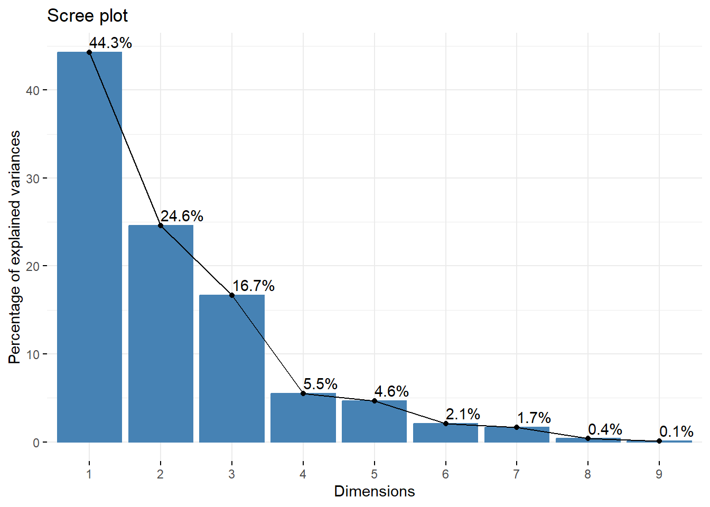
Βλέπουμε ότι η μία διάσταση αρκεί για να περιγράψει το 44.3% της μάζας των δεδομένων μας. Βάζοντας ακόμα μία διάσταση στο «παιχνίδι» εξηγείται άλλο ένα 24.6%. Συνολικά, δηλαδή, από δύο διαστάσεις εξηγείται το 68.9% των δεδομένων μας. Δεν θέλουμε κάτι παραπάνω, οπότε προχωράμε τη μελέτη μας.
Για να απαντήσουμε τα ερωτήματα που θέσαμε στην αρχή αυτής της ενότητας, θα πρέπει να φτιάξουμε το γράφημα διπλής προβολής.

Το σημαντικό σε αυτή την αναπαράσταση είναι να εξετάσουμε τις γωνίες
με την μύτη στο σημείο διασταύρωσης των αξόνων (θα το αποκαλούμε
διασταύρωση) και πλευρές που να καταλήγουν
η μία σε μοβ
σημείο (πολιτική
ταυτότητα) και η άλλη σε πορτοκαλί (κόμμα). Συγκεκριμένα:
Η γωνία με πλευρές
διασταύρωση-Εθνικιστής καιδιασταύρωση-Σπαρτιάτες είναι πολύ μητερή και με μακριές πλευρές. Αυτό σημαίνει ότι κοιτάζοντας μέσα στο κόμμα των Σπαρτιατών, τα ποσοστά των εθνικιστών είναι εμφανώς μεγαλύτερα από του μέσου όρου. Και αντίστροφα. Κοιτάζοντας στο σύνολο των εθνικιστών, τα ποσοστά των Σπαρτιατών εκτοξεύονται προς τα πάνω σε σχέση με τα εκλογικά τους. Ομοίως έντονη συσχέτιση βλέπουμε και στο ΚΚΕ και στην πολιτική ταυτότητα Αντικαπιταλιστής ή Ακροαριστερός.Από την άλλη, η γωνία με πλευρές
διασταύρωση-Συντηρητικός καιδιασταύρωση-Νέα Αριστερά είναι πολύ πλατιά με με μακριές πλευρές. Αυτό υποδηλώνει το ποσοστό των συντηρητικών στη Νέα Αριστερά είναι εμφανώς κάτω από αυτό που συναντάμε στην κοινωνία. Αλλά και ανάποδα. Εστιάζοντας στους συντηρητικούς, οι οπαδοί της Νέας Αριστεράς είναι εμφανώς λιγότεροι από αυτό που θα αναμέναμε αν εκεί όλα τα κόμματα εκπροσωπούνταν απλά από τις εκλογικές αναλογίες τους. Τα ίδιαμπορούμε να πούμε με τη Νέα Αριστερά και την πολιτική ταυτότητα Αριστερός.Τι σημαίνουν τα παραπάνω όταν μιλάμε για δύο κόμματα; Δύο κόμματα που είναι κοντά το ένα στο άλλο και μακριά από το κέντρο (
διασταύρωση), πάει να πει ότι ασκούν τις ίδιες «πιέσεις» στα ποσοστά των πολιτικών ταυτοτήτων, ώστε να υπερβούν πάνω από τον μέσο όρο ή να καταποντιστούν κάτω από αυτόν. Κάτι τέτοιο συμβαίνει με τη Νίκη και την Ελληνική Λύση, όπερ σημαίνει ότι έχουν παρόμοιες σφαίρες επιρροής. Αλλά και από την άλλη, κόμματα κοντά στο κέντρο (διασταύρωση) είναι αυτά που στο εσωτερικό τους δεν έχουν να επιδείξουν κάποια ιδιομορφία, κάτι που να τα ξεχωρίζει από μια συνάθροιση τυχαίων ανθρώπων σε μια πλατεία. Ένα τέτοιο κόμμα είναι η Πλεύση Ελευθερίας.Τα ίδια μπορούμε να πούμε και για δύο πολιτικές ταυτότητες. Η ΔΞ/ΔΑ είναι πιο κοντά στο κέντρο. Αυτό σημαίνει ότι στα άτομα που τη φέρουν δεν ξεχωρίζει κάποιο κόμμα, με τρόπο εντονότερο προς τα πάνω ή προς τα κάτω σε σχέση με αυτό που φαίνεται σε όλη την κοιωνία. Επίσης, δεδομένου ότι οι πολιτικές ταυτότητες Υπέρμαχος της Ελεύθερης Αγοράς και Κεντροδεξιός είναι κοντά και λίγο μακριά από το κέντρο, πάει να πει ότι εμφανίζουν την ίδια άνοδο ή πτώση στο κάθε κόμμα.
Αφού ερμηνεύσαμε διάφορα στοιχεία του γραφήματος, πάμε να εξετάσουμε τον ρόλο των αξόνων. Αυτοί ποσοτικοποιούν την διαφοροποίηση των σφαιρών επιρροής των κομμάτων και των πολιτικών ταυτοτήτων. Για να το δούμε ακριβέστερα σε ποια μέρη χωρίζουν τα κόμματα και τις πολιτικές ταυτότητες, θα χρειαστεί να δούμε ποια κόμματα και ποιες πολιτικές ταυτότητες εκπροσωπούνται καλά με αυτό το πλήθος διαστάσεων. Τα παρακάτω γραφήματα δείχνουν με κόκκινο τα κόμματα και τις πολιτικές ταυτότητες πολιτικές ταυτότητες που έχουν καλή εκπροσώπηση στο σχήμα μας.
Κόμματα
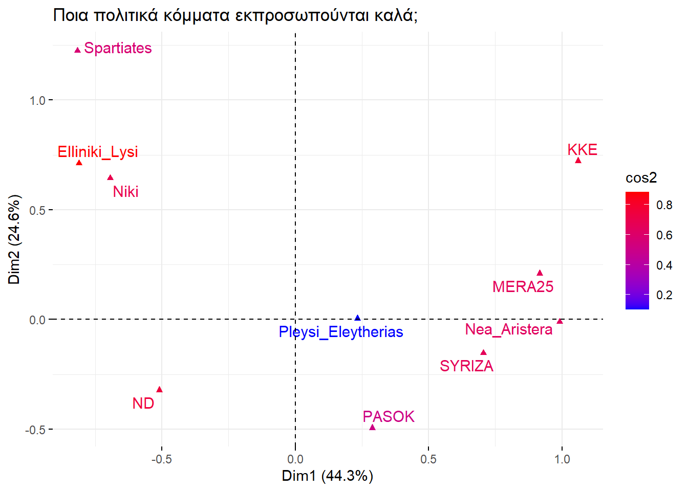
Πολιτικές ταυτότητες
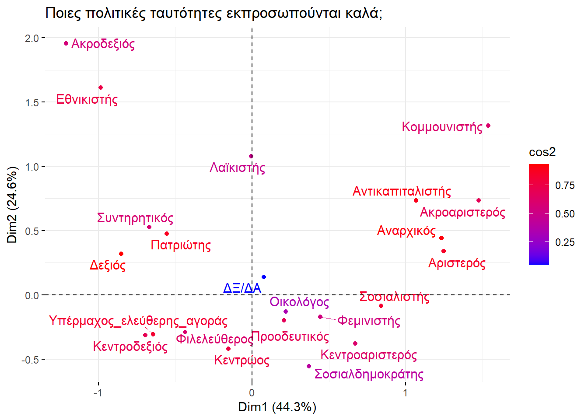
Μπορούμε να πούμε ότι με εξαίρεση την Πλεύση Ελευθερίας και το ΔΞ/ΔΑ, όλα τα κόμματα έχουν καλή εκπροσώπηση στο διάγραμμα διπλής προβολής. Σε δεύτερη φάση, λοιπόν, θα εξετάσουμε τα κόμματα και τις πολιτικές ταυτότητες που διαμορφώνουν τους άξονες, ώστε να τους νοηματοδοτήσουμε. Στα παρακάτω σχήματα με κόκκινο πάλι παριστάνονται ακριβώς αυτά που τους διαμορφώνουν πιο έντονα.
Κόμματα
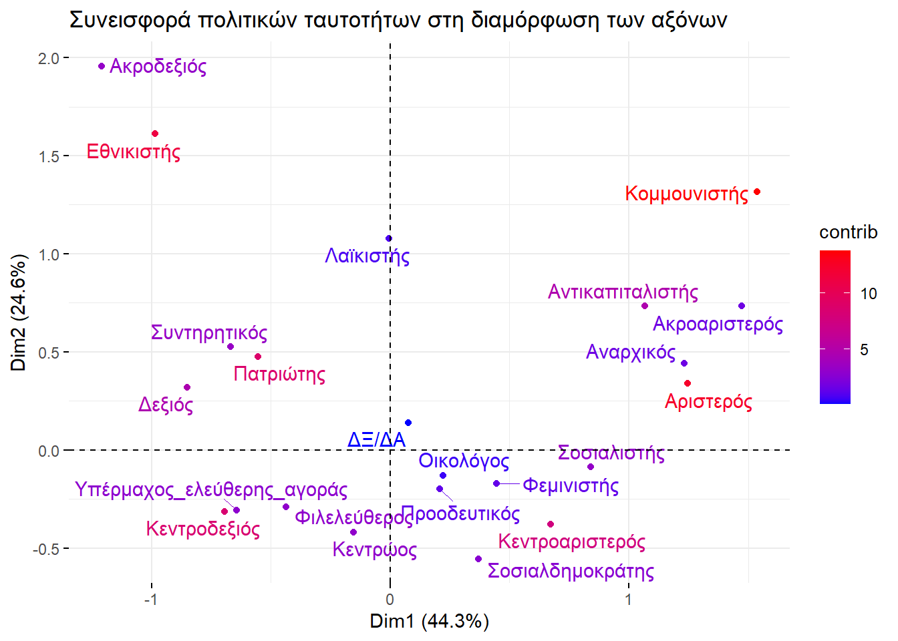
Πολιτικές ταυτότητες
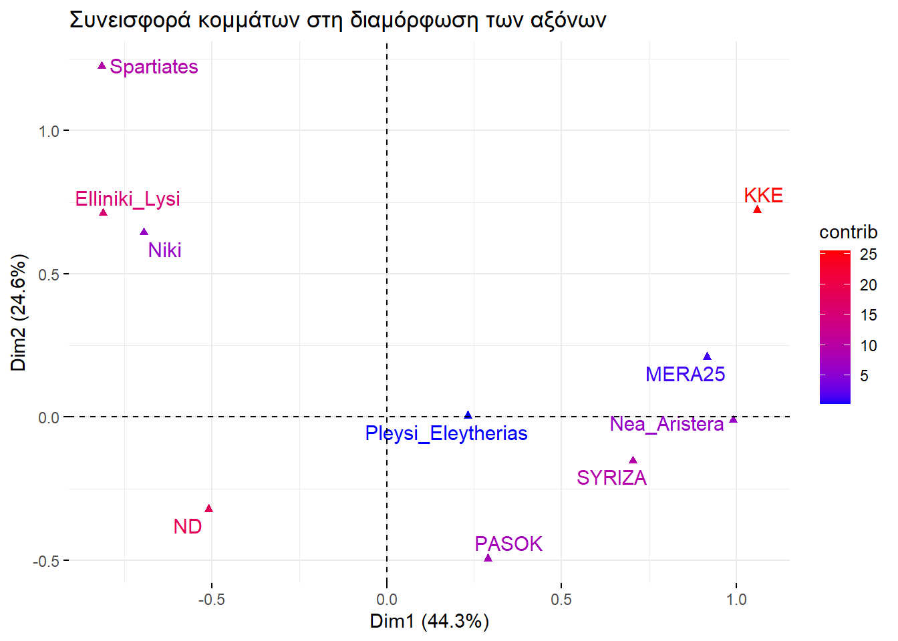
Εξετάζοντάς τα, θα μπορούσαμε να βγάλουμε παρόμοιο συμπέρασμα και με την απεικόνιση στην περίπτωση της πολυδιάστατης προσαρμογής κλίμακας. Ο οριζόντιος άξονας ξεχωρίζει την αριστερά από τη δεξιά, ενώ ο κατακόρυφος θα μπορούσαμε να πούμε ότι αποτυπώνει το βαθμό που ένα κόμμα διαχειρίζεται το σύστημα ή επιδιώκει τη ρίξη με αυτό.
2 Η σχέση της αριστεράς στην κοινωνία
Στις παρακάτω ενότητες οι ερωτηθέντες απαντούν κάποιες ερωτήσεις επιλέγοντας μεταξύ των:
Συμφωνώ
Διαφωνώ
Δεν ξέρω / Δεν απαντώ
Οι ερωτηθέντες έχουν χωριστεί είτε ανά κόμμα, είτε ανά κοινωνική ομάδα. Εδώ θα μελετήσουμε την εγγύτητα των κομμάτων με την κάθε απάντηση, αλλά και με την κάθε κοινωνική ομάδα από τις κάτωθι:
- ηλικία 17-34,
- ηλικία 35-54
- ηλικία 55 και άνω
- ετήσιο καθαρό εισόδημα νοικοκυριού έως 7000€,
- ετήσιο καθαρό εισόδημα νοικοκυριού από 7001€ έως 16000€,
- ετήσιο καθαρό εισόδημα νοικοκυριού από 16001€ έως 30000€,
- ετήσιο καθαρό εισόδημα νοικοκυριού άνω των 30000€,
- μισθωτός δημοσίου,
- μισθωτός ιδιωτικού,
- συνταξιούχος,
- ελεύθερος επαγγελματίας / αυτοαπασχολούμενος,
- άνεργος,
- οικιακά.
Σε ό,τι ακολουθεί θα θεωρείται ότι ο γράφων είναι εξοικειωμένος τόσο με την ανάγνωση των αποτελεσμάτων της ανάλυσης αντιστοιχίας, όσο και της πολυδιάστατης προσαρμογής κλίμακας. Αν αυτό δεν συμβαίνει, ίσως να είναι καλή ιδέα να αναγνώσει το παραπάνω μέρος της εργασίας ή να ανατρέξει εδώ (MDS, CORA).
2.1 Η κοινωνία είναι διαιρεμένη σε κοινωνικές τάξεις, οι οποίες έχουν αντικρουόμενα συμφέροντα
Πόσο κοντά είναι τακόμματα στα ΝΑΙ/ΟΧΙ;
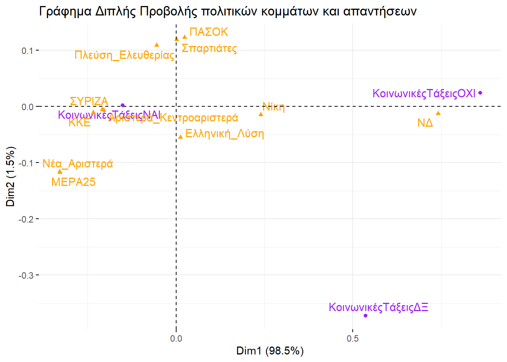
Πόσο κοντά είναι τα κόμματα στην εκάστοτε κοινωνική ομάδα;
## Εκτέλεση metaMDS...
## Ολοκληρώθηκε η metaMDS.2.2 Το μεγαλύτερο πρόβλημα για την πρόοδο της κοινωνίας μας είναι το γεγονός ότι οι λίγοι εκμεταλλεύονται τους πολλούς
Πόσο κοντά είναι τα κόμματα στα ΝΑΙ/ΟΧΙ;
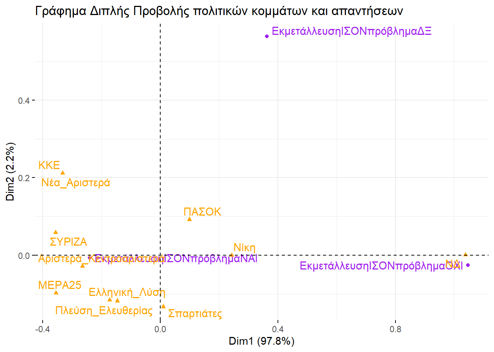
Πόσο κοντά είναι τα κόμματα στην εκάστοτε κοινωνική ομάδα;
## Εκτέλεση metaMDS...## Ολοκληρώθηκε η metaMDS.2.3 Δεν θα πρέπει να αποκλειστεί το ενδεχόμενο ο λαός να ασκήσει βία κάποια στιγμή ενάντια στο σύστημα
Πόσο κοντά είναι τα κόμματα στα ΝΑΙ/ΟΧΙ;

Πόσο κοντά είναι τα κόμματα στην εκάστοτε κοινωνική ομάδα;
## Εκτέλεση metaMDS...## Ολοκληρώθηκε η metaMDS.2.4 Η δημοκρατία είναι το καλύτερο πολίτευμα αλλά θα ανεχόμουν τον περιορισμό της για να εξασφαλιστεί ανάπτυξη και ευημερία
Πόσο κοντά είναι τα κόμματα στα ΝΑΙ/ΟΧΙ;
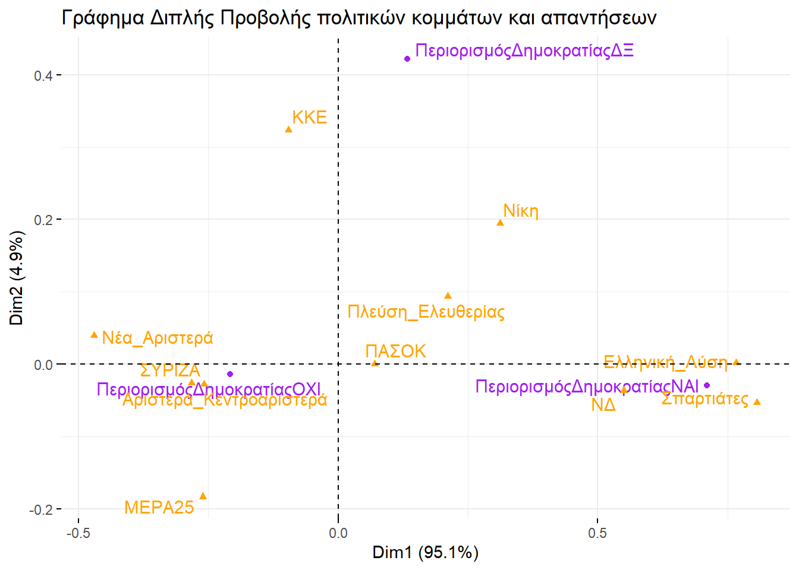
Πόσο κοντά είναι τα κόμματα στην εκάστοτε κοινωνική ομάδα;
## Εκτέλεση metaMDS...## Ολοκληρώθηκε η metaMDS.2.5 Οι πολιτικοί πρέπει να ακολουθούν πάντοτε τη βούληση του λαού
Πόσο κοντά είναι τα κόμματα στα ΝΑΙ/ΟΧΙ;
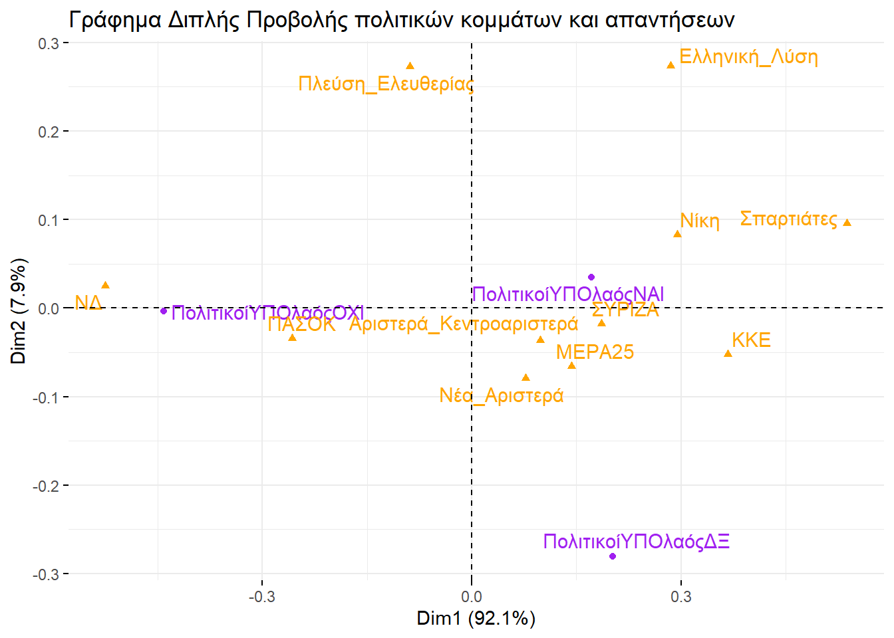
Πόσο κοντά είναι τα κόμματα στην εκάστοτε κοινωνική ομάδα;
## Εκτέλεση metaMDS...## Ολοκληρώθηκε η metaMDS.2.6 Θα πρέπει να μειωθεί ο χρόνος πλήρους απασχόλησης από 40 σε 30 ώρες την εβδομάδα (5ήμερο - 6ωρο)
Πόσο κοντά είναι τα κόμματα στα ΝΑΙ/ΟΧΙ;
Πόσο κοντά είναι τα κόμματα στην εκάστοτε κοινωνική ομάδα;
## Εκτέλεση metaMDS...## Ολοκληρώθηκε η metaMDS.2.7 Είναι εφικτό μια ελληνική κυβέρνηση να μειώσει τον χρόνο πλήρους απασχόλησης από 40 σε 30 ώρες την εβδομάδα (5ήμερο - 6ωρο)
Πόσο κοντά είναι τα κόμματα στα ΝΑΙ/ΟΧΙ;
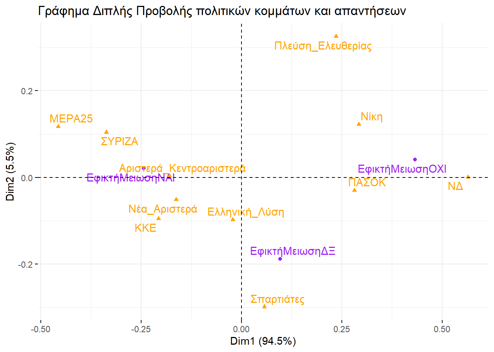
Πόσο κοντά είναι τα κόμματα στην εκάστοτε κοινωνική ομάδα;
## Εκτέλεση metaMDS...## Ολοκληρώθηκε η metaMDS.2.8 Η Ελλάδα δεν θα πρέπει να είναι εξαρτημένη στρατιωτικά από ισχυρότερες χώρες
Πόσο κοντά είναι τα κόμματα στα ΝΑΙ/ΟΧΙ;
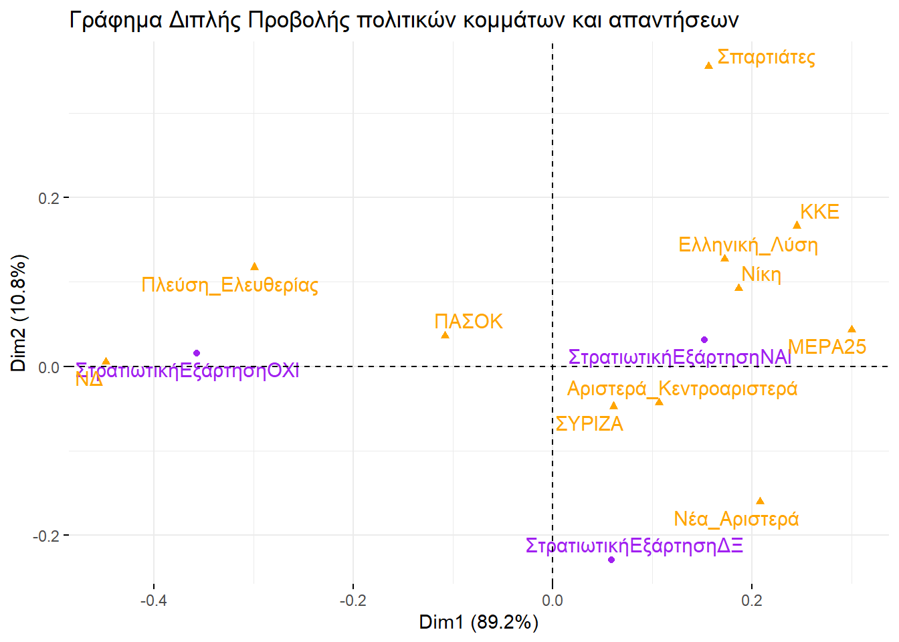
Πόσο κοντά είναι τα κόμματα στην εκάστοτε κοινωνική ομάδα;
## Εκτέλεση metaMDS...## Ολοκληρώθηκε η metaMDS.2.9 Στην ΕΕ οι χώρες του Βορρά εκμεταλλεύονται τις χώρες του Νότου
Πόσο κοντά είναι τα κόμματα στα ΝΑΙ/ΟΧΙ;
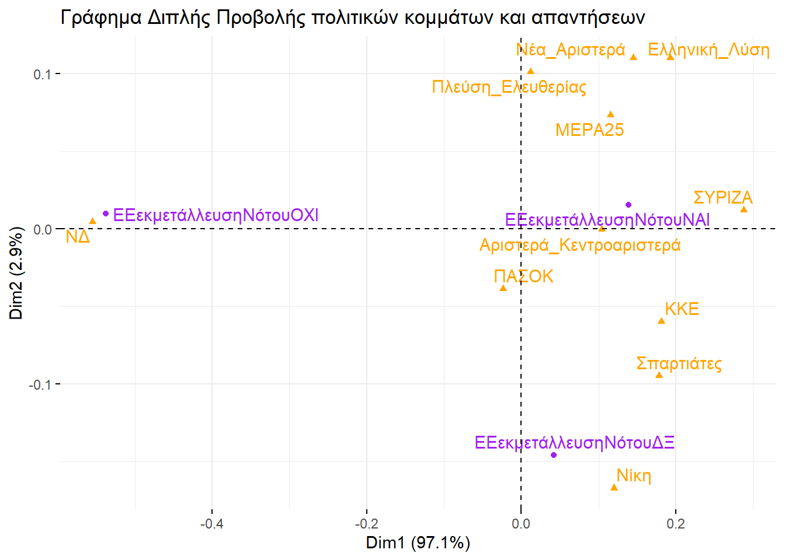
Πόσο κοντά είναι τα κόμματα στην εκάστοτε κοινωνική ομάδα;
## Εκτέλεση metaMDS...## Ολοκληρώθηκε η metaMDS.2.10 Η αντιμετώπιση της κλιματικής κρίσης πρέπει να τεθεί πιο πάνω από οποιαδήποτε άλλη πολιτική προτεραιότητα
Πόσο κοντά είναι τα κόμματα στα ΝΑΙ/ΟΧΙ;
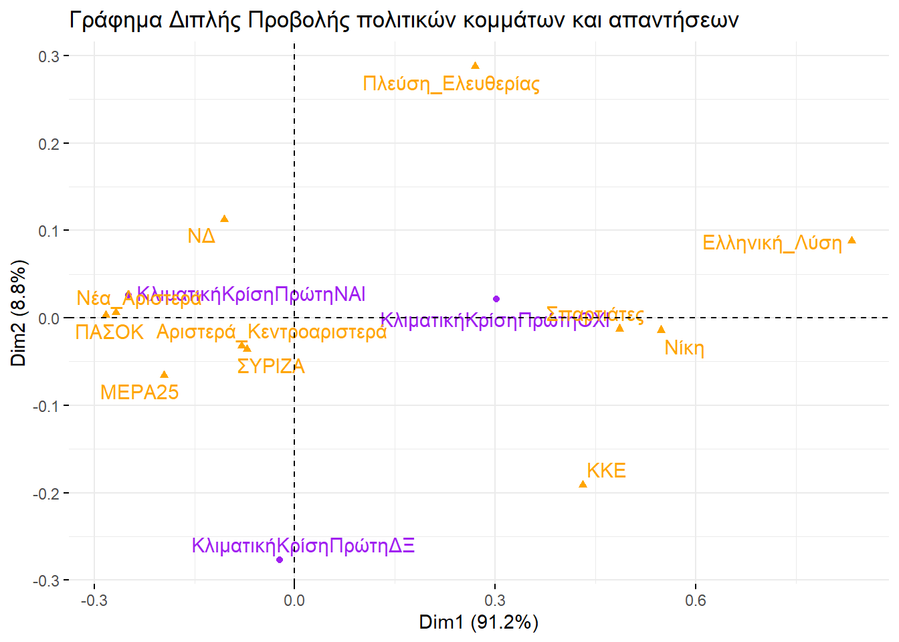
Πόσο κοντά είναι τα κόμματα στην εκάστοτε κοινωνική ομάδα;
## Εκτέλεση metaMDS...## Ολοκληρώθηκε η metaMDS.2.11 Οι μετανάστες και οι πρόσφυγες δεν αποτελούν απειλή για την ασφάλεια της χώρας
Πόσο κοντά είναι τα κόμματα στα ΝΑΙ/ΟΧΙ;
Πόσο κοντά είναι τα κόμματα στην εκάστοτε κοινωνική ομάδα;
## Εκτέλεση metaMDS...## Ολοκληρώθηκε η metaMDS.2.12 Δεν έχει σημασία το φύλο των γονέων για να είναι τα παιδιά ευτυχισμένα
Πόσο κοντά είναι τα κόμματα στα ΝΑΙ/ΟΧΙ;
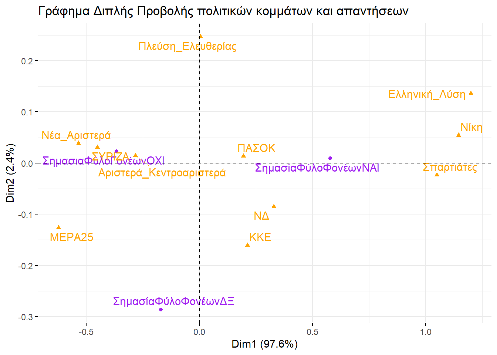
Πόσο κοντά είναι τα κόμματα στην εκάστοτε κοινωνική ομάδα;
## Εκτέλεση metaMDS...## Ολοκληρώθηκε η metaMDS.2.13 Η Ελλάδα πρέπει να είναι μια χώρα ανοικτών και όχι κλειστών συνόρων
Πόσο κοντά είναι τα κόμματα στα ΝΑΙ/ΟΧΙ;
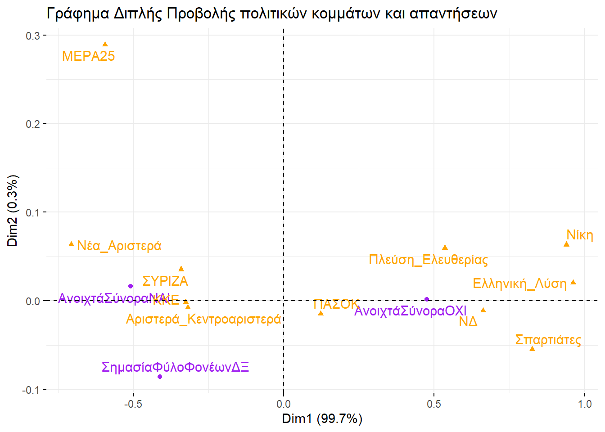
Πόσο κοντά είναι τα κόμματα στην εκάστοτε κοινωνική ομάδα;
## Εκτέλεση metaMDS...## Ολοκληρώθηκε η metaMDS.2.14 Το να είναι κάποιος Έλληνας δεν ταυτίζεται κατ’ ανάγκην με το να είναι και χριστιανός ορθόδοξος
Πόσο κοντά είναι τα κόμματα στα ΝΑΙ/ΟΧΙ;
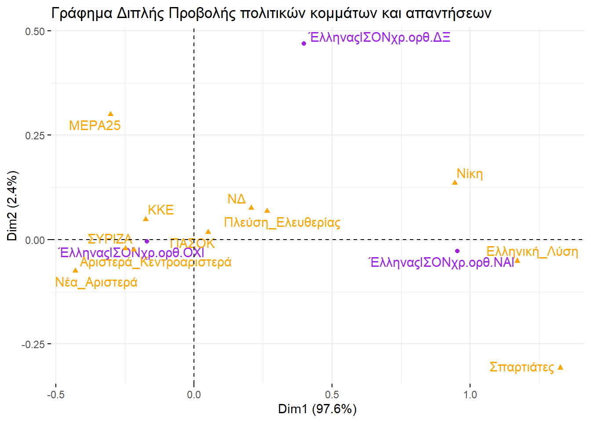
Πόσο κοντά είναι τα κόμματα στην εκάστοτε κοινωνική ομάδα;
## Εκτέλεση metaMDS...## Ολοκληρώθηκε η metaMDS.2.15 Πρέπει να υπάρξει χωρισμός εκκλησίας και κράτους
Πόσο κοντά είναι τα κόμματα στα ΝΑΙ/ΟΧΙ;
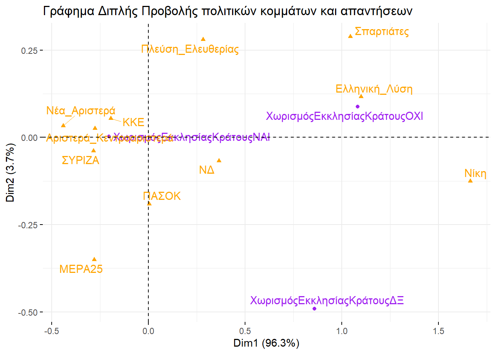
Πόσο κοντά είναι τα κόμματα στην εκάστοτε κοινωνική ομάδα;
## Εκτέλεση metaMDS...## Ολοκληρώθηκε η metaMDS.2.16 Τα κόμματα σε σχέση με τις κοινωνικές ομάδες για όλα τα ζητήματα
## Εκτέλεση metaMDS...
## Ολοκληρώθηκε η metaMDS.σελ. 36 της έρευνας